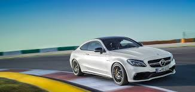

El fabricante alemán de automóviles Mercedes-Benz Cars, del grupo Daimler, cerró el pasado mes de octubre con volumen mundial de ventas de 165.706 unidades, un 13,4% más en comparación con el mismo mes de 2014, según datos publicados por la empresa. El responsable de Marketing y Ventas de la corporación, Ola Källenius, indicó que en China ya ha logrado en octubre superar las ventas totales de 2014, al tiempo que resaltó que los todoterrenos son especialmente populares en dicho mercado. En los diez primeros meses del año, la corporación germana entregó 1,63 millones de unidades en todo el mundo, lo que se traduce en una progresión del 15,8% en comparación con las cifras del mismo período del año anterior. Mercedes-Benz Cars vendió 65.390 unidades en Europa en el décimo mes del año, un 7,8% más, y 659.106 unidades en lo que va de 2015, un 10,8% más, y 33.297 unidades en Norteamérica en octubre, un 1,8% más, y 320.186 unidades en el acumulado, un 7,9% más. La corporación matriculó un total de 51.507 vehículos en el mercado de Asia-Pacífico el mes pasado, con una subida del 24,8%, y 497.914 unidades hasta octubre, lo que representa una progresión del 25,7%.